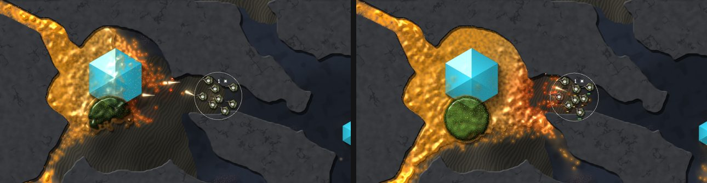
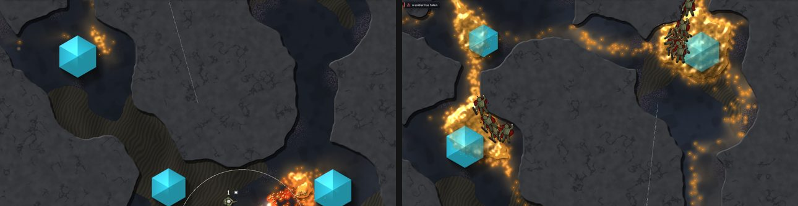

<title>Grudge Scar Tissue</title>
<meta name="claude:viewport-fit-sides" content="cover">
<link rel="stylesheet" href="https://fonts.googleapis.com/css2?family=Space+Grotesk:wght@500;700&family=Inter:wght@400;600&family=JetBrains+Mono:wght@400&display=swap">
<style>
/* Layout: one reading column; each picture full width with its counts beside it in a small table. */
:root {
  --bg: #f6f3ec; --fg: #23211c; --muted: #6b665a; --line: #ddd6c6; --slime: #b86a00; --panel: #fffdf8;
  --display: "Space Grotesk", "Segoe UI", system-ui, sans-serif;
  --body: "Inter", "Segoe UI", system-ui, sans-serif;
  --mono: "JetBrains Mono", ui-monospace, monospace;
}
@media (prefers-color-scheme: dark) { :root:not([data-theme="light"]) { --bg: #17150f; --fg: #ece6d8; --muted: #a59d8b; --line: #3a352a; --slime: #f0a326; --panel: #1f1c15; color-scheme: dark } }
:root[data-theme="dark"] { --bg: #17150f; --fg: #ece6d8; --muted: #a59d8b; --line: #3a352a; --slime: #f0a326; --panel: #1f1c15; color-scheme: dark }
body { background: var(--bg); color: var(--fg); font: 15px/1.55 var(--body); }
main { max-width: 1320px; margin: 0 auto; padding-block: 28px 60px; padding-left: max(16px, env(safe-area-inset-left, 0px)); padding-right: max(16px, env(safe-area-inset-right, 0px)); display: grid; gap: 34px; }
h1, h2 { font-family: var(--display); text-wrap: balance; margin: 0; }
h1 { font-size: 2rem; }
h2 { font-size: 1.25rem; }
p { margin: 0; max-width: 68ch; }
.lede { display: grid; gap: 10px; }
.eyebrow { font: 12px var(--mono); letter-spacing: .06em; text-transform: uppercase; color: var(--slime); }
section { display: grid; gap: 12px; }
figure { margin: 0; display: grid; gap: 8px; }
figure img, figure video { width: 100%; max-width: 100%; height: auto; border-radius: 6px; background: #000; }
.pair-labels { display: grid; grid-template-columns: 1fr 1fr; font: 12px var(--mono); color: var(--muted); }
figcaption { color: var(--muted); font-size: 13px; max-width: 90ch; }
.tablewrap { overflow-x: auto; }
table { border-collapse: collapse; font-variant-numeric: tabular-nums; font-size: 13px; }
th, td { text-align: right; padding: 4px 12px; border-bottom: 1px solid var(--line); white-space: nowrap; }
th:first-child, td:first-child, th:nth-child(2), td:nth-child(2) { text-align: left; }
th { font-weight: 600; color: var(--muted); }
tr.on td { color: var(--slime); }
.rec { background: var(--panel); border: 1px solid var(--line); border-radius: 8px; padding: 16px 18px; display: grid; gap: 8px; }
code { font: 13px var(--mono); }
ul { margin: 0; padding-left: 20px; max-width: 80ch; }
</style>

<main>
  <div class="lede">
    <div class="eyebrow">Lab prototype · planet 7, the Grudge · not in the game</div>
    <h1>Where you hurt it, it grows back tough</h1>
    <p>Enemy named planet 7 the weakest "one nameable thing": the Grudge's pull back to where it was hurt reads like any slime coming at you. The Grudge already keeps a scar, a slow-fading memory of every alarm, and the view already draws slime on it as pale scar tissue. The candidate: a hit on a walker standing on scar shrugs off with chance up to P, full at a scar of 2,000 (about a minute of fire on one place). Left is off, right is scar tissue, in every picture.</p>
  </div>

  <section>
    <h2>A squad holding one place, 0:04 to 0:58, zoom 6</h2>
    <figure>
      <video src="hold-clip.mp4" controls muted loop playsinline autoplay></video>
      <div class="pair-labels"><span>off</span><span>scar tissue, P 0.75</span></div>
      <figcaption>Planet 7, run seed 1, 8 soldiers holding at the edge of a colony, firing freely. A frame every 3 game seconds. Off, the near side is cut back to a bare gap; with scar tissue the body stays pressed against the squad.</figcaption>
    </figure>
    <figure>
      
      <div class="pair-labels"><span>off · 0:49</span><span>scar tissue · 0:49</span></div>
    </figure>
    <div class="tablewrap">
      <table>
        <thead><tr><th>Time</th><th>Arm</th><th>Killed</th><th>Walkers within 60 cells</th></tr></thead>
        <tbody>
          <tr><td>0:16</td><td>off</td><td>1,380</td><td></td></tr>
          <tr class="on"><td>0:16</td><td>scar tissue</td><td>434</td><td></td></tr>
          <tr><td>0:40</td><td>off</td><td>6,614</td><td>368</td></tr>
          <tr class="on"><td>0:40</td><td>scar tissue</td><td>1,767</td><td>1,924</td></tr>
          <tr><td>0:57</td><td>off</td><td>8,837</td><td>1,165</td></tr>
          <tr class="on"><td>0:57</td><td>scar tissue</td><td>2,600</td><td>3,301</td></tr>
        </tbody>
      </table>
    </div>
    <p>Both squads were overrun at about 0:58.</p>
  </section>

  <section>
    <h2>The run bot at 2:00</h2>
    <figure>
      
      <div class="pair-labels"><span>off</span><span>scar tissue, P 0.75</span></div>
    </figure>
    <div class="tablewrap">
      <table>
        <thead><tr><th>Arm</th><th>Soldiers</th><th>Killed</th><th>Shots</th></tr></thead>
        <tbody>
          <tr><td>off</td><td>30</td><td>11,749</td><td>1,230</td></tr>
          <tr class="on"><td>P 0.5</td><td>21</td><td>8,795</td><td>1,966</td></tr>
          <tr class="on"><td>P 0.75</td><td>4</td><td>5,360</td><td>3,218</td></tr>
        </tbody>
      </table>
    </div>
    <p>At 1:00 all three are level (21 soldiers, 732 to 881 killed): the toughness only bites after the bot has fought in one area for a while. One seed.</p>
  </section>

  <section class="rec">
    <div class="eyebrow">Recommendation</div>
    <p><b>Build it as the Grudge's thing, changed:</b> scar tissue at P 0.5 with the scar full at 2,000, the pull kept. Card: "Where you hurt it, it grows back tough. Don't fight on old ground."</p>
    <ul>
      <li>Enemy sets P and the full scar by play; 0.75 took the bot from 30 soldiers to 4.</li>
      <li>Look sets the pale tissue's full point to the same 2,000 (today any scar reads full), so pale means tough.</li>
      <li>Direction picks a counter for the card: what ends a scar (fire on it, or faster fading on bare ground) is untested.</li>
    </ul>
    <p>Report: <code>Reports/lab-scar-tissue-2026-11-24/README.md</code>. Code on the lab branch only, <code>4c76a347</code>. Costs one scar read a hit, nothing a step.</p>
  </section>
</main>
